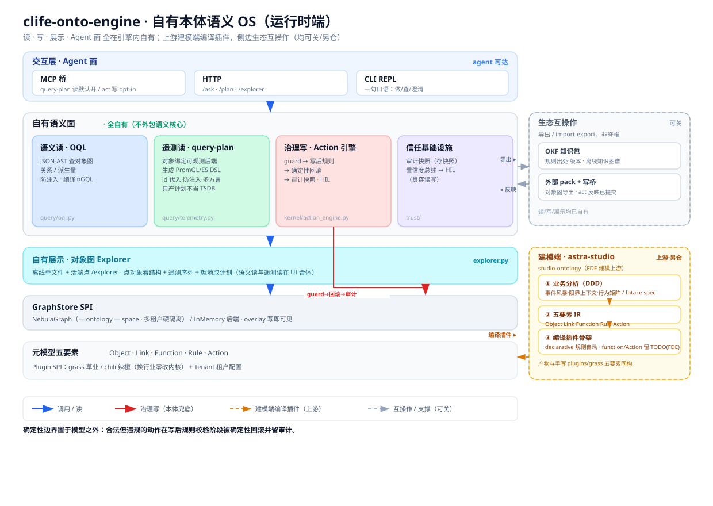

S1 告诉你为什么必须有这层。
今天告诉你，它长什么样。
一档来源：clife-onto-engine 源码 · docs/assets/architecture-overview.svg · docs/01-metamodel-and-plugin-spi.md（内核"宪法"）
【时间盒 180′】 开场 + 全图 25′ ｜ 底座（五要素 / GraphStore）25′ ｜ 治理写 + 两处断裂 45′ ｜ 两条读路径 20′ ｜ 信任基础设施 20′ ｜ 展示 + 交互层 15′ ｜ 生态与建模端 10′ ｜ CI 防腐 12′ ｜ 收口 + 自查 10′
⭐【本课的讲法，开场就交代】"今天这门课只有一张图。第三页我会把它投出来，然后我们从最底下一层往上爬，每一屏认领图上一个块。讲完，这张图你应该能自己默出来。"
⭐【图的标题就是主梁】"注意看图的标题——『自有本体语义 OS（运行时端）』。OS 不是我给它起的比喻，是这套系统给自己的定位。所以今天你可以用你对操作系统的全部直觉来理解它：内核、应用、用户、系统调用、沙箱、journaling——全都对得上。"
⭐【但真正的教学点是它在哪断掉】"一个类比的价值不在于覆盖多少，在于断在哪里。这套东西和操作系统只在两个地方不一样——而那两处，正好是它区别于一般执行引擎的全部所在。第 7、8 页讲。"
【读码准备】提前在投屏机上打开 ~/Codes/onto-fundary-plugins/。图上每个块都标了文件名，讲到哪翻到哪。翻不动这门课掉一半分量。
【为什么这门课重要】"客户的架构师问'你们的规则引擎和我们现有的校验有什么区别'——光有 S1 的判断力答不上来。今天就是为了让你答得上来。"
| S1 · 本体论 | S2 · 工程实现（本课） | S3 · 建模端如何支撑引擎 | |
|---|---|---|---|
| 讲哪一块 | 为什么必须有这层 | 整张图的运行时端 | 图右下角那个橙色框：astra-studio 建模端 |
| 教材 | 方法论文集 | clife-onto-engine 源码 | studio-ontology 仓库 |
| 形式 | 纯讲解 | 讲解 + 当场读码 | 讲解 + 管线走查 |
三门课是同一句话说了三遍，一次比一次具体：
只上 S1 不上 S2：
你说得出方案好不好，说不出好在哪一行。
⭐【那条链是三门专题课的主梁，指着念一遍】"S1 第六章讲 Karpathy 的 Software 3.0 时说过『本体是 LLM OS 的文件系统』——那门课把它当比喻用完就过了。今天这门课把它当图纸用。S3 讲怎么给这个 OS 编译应用，第五课让你亲手编译一个。"
【最后那句要说出口】"只上 S1 不上 S2，你说得出方案好不好，说不出好在哪一行。而客户的技术负责人，只关心哪一行。"

⭐⭐【这一页是全课骨架。投出来，先别讲，让他们看 30 秒。】
【然后按这个顺序指一遍，每块 15 秒，不展开】
① 最底下：元模型五要素——Object/Link/Function/Rule/Action，加 Plugin SPI（grass 草业 / chili 辣椒，换行业零改内核）和 Tenant 租户配置。这是地基。
② GraphStore SPI——NebulaGraph，一 ontology 一 space、多租户硬隔离；还有 InMemory 后端，overlay 写即可见。
③ 自有展示 · Explorer——离线单文件 + 活端点。
④ 自有语义面，四块：语义读 OQL / 遥测读 query-plan / 治理写 Action 引擎 / 信任基础设施。今天大半时间在这一层。
⑤ 最上面：交互层三个 Agent 面——MCP 桥、HTTP、CLI REPL。
⑥ 右上：生态互操作——OKF 知识包、外部 pack + 写桥，标着"可关"、"非脊椎"。
⑦ 右下：建模端 astra-studio——上游、另仓，S3 整门课讲它。
⭐【三个必须当场点出来的细节】
① 标题：「自有本体语义 OS」——OS 是这套系统给自己的定位，不是我的比喻。
② 那条红线：guard→回滚→审计，从 Action 引擎穿下去直插存储。全图只有这一条红线——写路径只有一条，而且它必须穿过闸门。
③ 最底下那句话：「确定性边界置于模型之外：合法但违规的动作在写后规则校验阶段被确定性回滚并留审计。」这是全图的题眼，也是这门课的题眼。今天最后一页会回到它。
【告诉他们讲法】"接下来我们从最底下往上爬。为什么不从上往下？因为上面那些面能做什么，全部由最底下那五个要素决定。"
| 操作系统 | 这张图上的 |
|---|---|
| 内核 / 应用 / 用户 | 内核 / Plugin SPI（grass·chili）/ Tenant 租户配置 |
| 系统调用 syscall | 治理写 · Action 引擎——全图唯一那条红线 |
| errno 是返回值不是 panic | 拒绝是结构化数据 ✅ |
| DMA / 旁路，绕过逐次 syscall | 遥测读 · query-plan（读侧旁路）· 数据摄取（写侧旁路） ✅ |
| ABI——应用编译一次，内核升级不重编 | Plugin SPI——换行业零改内核 |
| 沙箱：应用拿不到裸句柄 | Capability：ctx 不是数据库连接 |
| journaling：崩溃后重建一致状态 | 审计快照：三个月后重建当时的判断 |
| 设备驱动 / VFS | GraphStore SPI：Nebula / InMemory 可换后端 |
| checkpatch / sparse：内核纯度检查 | 两个 CI 门禁脚本（第 14 页） |
这套东西和操作系统
只在两个地方不一样——
而那两处，正好是它的全部本质。
⭐【这一页的作用是给学员一副眼镜，戴上再看图】"你们对操作系统是有直觉的。这门课的全部策略就是：拿你已经懂的，去够你不懂的。"
【强调这不是修辞】"我不是在打比方说'有点像'。Plugin SPI 就是 ABI，GraphStore SPI 就是 VFS，Capability 就是文件描述符——每一条都能落到具体设计上。"
⚠️【一条使用纪律，必须说】"类比是脚手架，不是证明。客户面前可以用它建立直觉，但不能用它替代论证——客户问'你们凭什么保证规则一定被执行'，答案是那六步和 CI 门禁，不是'因为我们像操作系统'。类比赢不了技术负责人，行号才行。"
【留钩子】"两处不一样在第 7、8 页。先从地基开始。"
| Kernel 内核 | Plugin 应用 | Tenant 用户 | |
|---|---|---|---|
| OS 里是 | 内核 | 一个应用程序 | 一个用户的 home 目录 |
| 图上是 | Action 引擎 / OQL / trust / GraphStore SPI | grass · chili | Tenant 租户配置 |
| 行业词汇 | 否 | 是 | 是 |
| 谁改 | 内核团队 | FDE + 领域专家 | 交付 + 客户 |
Linux 内核里
不会有 if app == "photoshop"。
「换成医疗大模型，这段逻辑还成立吗？」 成立 → 内核 · 不成立 → 插件 · 具体数字（阈值 135）→ 租户
「多条规则违反收集全部」= 内核 · 「收缩压 > 140 算异常」= 插件 · 「这家机构阈值 135」= 租户
【现场动作：判缝准则要让学员用一次】报三个例子让他们喊内核/插件/租户。这是本章唯一互动，别跳过——判缝准则只有自己用过一次才记得住。
【第三档是陷阱，一定要点破】"阈值 135 连插件都不是，是租户数据。把阈值写死进插件，一样是越界，只是没那么显眼。插件写的是这条规则的存在与形态，租户配的是这家客户的数字。"
⭐【"换行业零改内核"这句是图上原话，也是最值钱的一句】"grass 是草业、chili 是辣椒，两个完全不同的行业，跑在同一个内核上，内核一行没改。这句话敢说，是因为它可以被机器验证——第 14 页会给你们看那两个脚本。"
【为什么这条线值得用 CI 守】可以讲那个腐烂故事：周一有人在内核加了一行 if metric == "blood_pressure"，理由是"就这一处先跑通"；周三另一个模块照抄；三个月后来了第二个行业，内核改不动了。没有人做错决定，每一步都是局部最优——所以 review 守不住，必须让机器守。
图上写的是 Plugin SPI: grass 草业 / chili 辣椒。那个 SPI 具体是什么？是七个槽位。
OS 的对照：ABI 是内核与应用之间的稳定契约——应用编译一次内核升级不重编，反过来内核也不需要知道这个应用是干什么的。
| # | 槽位 | 提供什么 | 谁写 | 编译能自动到哪一步 |
|---|---|---|---|---|
| 1 | Schema 包 | ObjectType / LinkType | FDE + 专家 | ✅ 全自动 |
| 2 | 映射注册表 | 源字段 → 本体字段 | FDE + 数据方 | ✅ 全自动 |
| 3 | Function / Rule 实现 | 派生量、复杂判据 | FDE | ⚠️ 只出骨架（declarative 除外） |
| 4 | Action handlers | 每个 Action 的变更逻辑 | FDE | ⚠️ 只出骨架 |
| 5 | 记忆词典 + 提示词骨架 | 行业术语、Agent 语言底子 | FDE + 专家 | ❌ 完全不生成 |
| 6 | Agent 角色定义 | 有哪些角色、能调什么 | FDE + 业务方 | ❌ 完全不生成 |
| 7 | CQ 验收集 | 能力问题 | 领域专家主导 | ⚠️ 格式不匹配 |
七槽位是验收清单，
不是自动化承诺。
⭐【这张表的真正用法：报价和排期】"被问'接一个新行业要多久'，不要拍脑袋说三个月。按这七格逐个估——哪几格客户能自己出人，哪几格必须我们上。这就是你的 WBS。"
⚠️【最后一列是第五课实测出来的，和文档不一致，必须讲】"宪法文档说编译产物『正好填满 SPI 七槽位』——实测不是。今天这门课的口径，以跑出来的为准，不以文档为准。"
【⑤⑥ 那两个 ❌ 先埋着】"为什么这两格完全不生成？S3 会给出结构性原因——简短说：IR 里压根没有这两段。怎么亲手填掉，第五课带你做。"
【接上一页】上一页说"换行业零改内核"，这一页就是那句承诺的接口清单：内核不用改，是因为新行业要交的东西全在这七格里，一格都不在内核。
多租户硬隔离——不是靠查询里加 where tenant_id=，是物理分开。
= OS 的地址空间隔离，不是"大家自觉别越界"
同一套 SPI，换一个实现就能脱库跑——
这就是 38 个 smoke_* 脚本能跑起来的前提，也是你在客户现场没有 Nebula 时的救命稻草
变更先进 overlay，后面的规则立刻读得到
⚠️ 这四个字是第 9 页那处"断裂"的技术前提，先记住
为什么要有 SPI 这一层：因为存储是会换的。客户已经有图库、或者根本不给你上图库——
把存储做成可换后端，本体层才不会被某一个数据库绑死。（这也是 S3 会讲的「不迁客户数据」在存储侧的对应。）
语义层不该绑死在
某一个存储实现上。
【"多租户硬隔离"是客户现场的一个高频问题，值得多说十秒】"客户的安全负责人一定会问'不同客户的数据怎么隔离'。答案不是'我们查询里带了租户 ID'——那是软的。是『一个 ontology 一个 space』，物理分开。"
⭐【overlay 写即可见，先埋后用】这四个字现在只需要记住，第 9 页会兑现：正因为写完立刻可见，规则才能在写之后判断"变更后的世界还合不合法"。
【InMemory 那格有实战价值】"你在客户现场，对方不给你装 Nebula，你照样能把本体跑起来给他看。这不是玩具模式，38 个冒烟脚本全靠它。"
三件事和 OS 的 syscall 一模一样：① 应用不能直接碰存储，必须走这条路 ② 入口先查权限（_authz_violation） ③ 失败返回的是数据，不是异常——errno 也从来不是 panic
| 普通 tool calling | Action | |
|---|---|---|
| 谁决定成不成立 | 模型决定调什么，函数就执行 | 模型只能「申请」，引擎决定它成不成立 |
| 留痕 | 看实现 | 强制审计快照（成功和被拒都有） |
execute():67 · validate():168 · _eval_rules():209 · _atomic_flush():222 · _compensate():239 · _audit():255
【读码：现在打开 kernel/action_engine.py】对着行号走一遍，指出六个方法的位置即可。学员看到"图上说的和代码里真的对得上"，这门课的可信度就立住了。
【指着全图那条红线说】"回到第 3 页那张图——全图只有一条红线，就是这条。写路径只有一条，而且它必须穿过闸门。"
【validate 预演别忘了提一句】validate() 跑全套但永不落库，三个消费者：前端（点提交前就看到会被拒）·Agent（先试一次，避免拿真实拒绝当学习信号）·FDE（调规则不用反复清数据）。
【一句可以拿去用的话术】客户问"你们的 AI 会不会乱改数据"——"Agent 只能申请，引擎决定。而且它申请的每一次，无论成败都有快照。"
【下一页是高潮，这里留个话】"到这里为止，它和操作系统还是一样的。下一页，两处不一样。"
| 操作系统 | 本体引擎 | |
|---|---|---|
| ❌ 一 | syscall 先校验参数，再执行 校验的是「这次调用」 | 先写进 overlay，再判断世界还合不合法 校验的是「变更之后的整个世界」 |
| ❌ 二 | 返回一个 errno | 收集全部违反，不短路 |
| ➕ 多的 | 没有——调用者是程序，不会"不确定" | 置信度总线——调用者是 LLM，它会（第 11 页） |
规则「一个护理员同时负责不超过 8 人」——要判断"这次分配之后会不会超"，必须先算上这一次。
写前校验只能写成 当前数量+1 > 8：把变更语义硬编码进了规则，换成"批量转移 5 人"就得重写。
写后校验的规则一个字不改。
因为调用者不同。 syscall 的调用者是程序，按固定逻辑重试，一次一个 errno 无所谓。
我们的调用者是 LLM 和人。短路会让他们逐条撞墙；对 Agent 尤其致命——每轮只学到一个约束，会在规则空间里做代价高昂的随机游走。
syscall 校验的是调用，
本体引擎校验的是世界。
⭐⭐【全课最重要的一页。讲慢，讲透。】这一页给学员一个记忆钩子：整套系统和 OS 只有两处不同，而那两处就是最反直觉的两条设计。比让他们背"三条铁律"牢得多。
【左格接 S1】这是"物理引擎 vs 字典"在代码层面的落点。规则描述的是世界的稳态条件，不是某个操作的参数约束。学员在 S1 记住了那个比喻，今天第一次看到它在代码里的样子。
【右格的"因为调用者不同"是关键五个字】它把一条看起来像 UX 优化的设计，还原成了一条架构必然。
【最后那句要板书】"syscall 校验的是调用，本体引擎校验的是世界。"——九个字，比整张表都好记。
【代价要主动说】"写后校验的代价是必须有可靠回滚——所以有 _compensate()。而且它的注释老老实实写着『尽力而为』：内存补偿不是数据库事务，副作用已经发出去就撤不回来。这类边界要主动说出来——主动说 = 你想过；被客户架构师问出来 = 你没想过。"
【现场提问】"你们能再想一条'写前校验写不出来'的规则吗？"——凑够两个例子，这条就扎进去了。
| 语义读 OQL | 遥测读 query-plan | |
|---|---|---|
| 查什么 | 对象、关系、派生量——世界的结构 | 时序、指标——世界的读数 |
| 怎么落地 | 编译成 nGQL 打到图库 | 生成 PromQL / ES DSL 交给别人执行 |
| 自己存数据吗 | 是（图库） | 否——只产计划，不当 TSDB |
「只产计划不当 TSDB」这七个字是一条战略边界：
客户已经有 Prometheus、有 ES、有他们的时序库——我们不去替换它，我们生成它听得懂的查询。
读侧两条路，写侧也两条路——
高吞吐的那条都不走闸门。
= OS 的 DMA / mmap：内核有意让出一条快路
⭐【这一页最容易讲丢的是那个对称，一定要点出来】"读是两条路，写也是两条路：治理写走 Action 闸门，高吞吐的数据摄取不走。判据是——这是『观测』还是『决定』？"
【顺手做个判断题，30 秒】手环上报心率 = 摄取 ｜ 医生改护理等级 = 治理 ｜ 系统按规则自动生成一条预警 = 治理（最容易错）｜ Agent 执行"换护理员" = 治理。判据不是"谁触发的"，是"这是不是一个决定"——Agent 自动做的决定恰恰最需要审计。
【为什么遥测不能过闸，三个理由任意一个都够】① 性能：每条读数跑规则+落快照，成本是业务写入的百倍 ② 语义：读数是"观测"不是"决定"，审计的对象是决定 ③ 可用性：拦住传感器数据，你丢的是事实——而事实不该被规则否决。
【"只产计划不当 TSDB"在客户现场很好用】"我们不动您的监控体系，我们生成您的 Prometheus 听得懂的查询。"——把"要不要换系统"的对话变成"要不要加一层"。
存的不是改了什么，是当时世界是什么样。
参数 · 涉及对象的状态 · 触发了哪些规则及判定 · schema 版本号 · 时间戳 · 执行者
① 同事务落库 ② 拒绝也落审计 ③ 带版本号才能重放
程序调 write() 不会"有点不确定"。LLM 会。
所以每次 Agent 发起的 Action 带一个置信度，与拒绝结果交叉，就得到一张诊断表（见下）
| 通过 | 被拒 | |
|---|---|---|
| 高置信 | 正常 | ⚠️ 查规则 / 查记忆——要么规则写错了，要么记忆里有误导信息 ← 金矿 |
| 低置信 | ⚠️ 侥幸，值得抽查 | 意图理解错了——正常，说明闸门在起作用 |
"模型很确定，但被拦了"——这是唯一能自动发现"规则写错了"的信号。 没有它，你只能等客户投诉「系统老是拦我」，而那时已经晚了。
【"拒绝也落审计"最反直觉，展开讲】"合规审计最常问的不是'你们为什么做了这件事'，而是'当时为什么没做'。"举例：出了事故，监管问"系统当时有没有预警"——只有拒绝也留痕，你才答得出来。
⭐【右格是整张图上唯一"我们比 OS 多"的地方，要讲出分量】"前面十页我们一直拿 OS 当尺子量自己。这一格反过来：这是操作系统里根本没有的东西，因为它的调用者不需要。"
【回扣 S1】S1 说"误拦截比漏拦截更危险"，但没给检测手段。这一页给了：右上角那一格。
【FDE 的实践，说出口】"上线后第一个月，每周看一次右上角。这是你能拿出来的、最有说服力的运营价值证明。"
【HIL 在这里只点一句】置信度总线通到 HIL——细节是第五课下半场的主场，今天不展开。
「离线单文件」这四个字对 FDE 是有分量的：一个 HTML 甩给客户就能看，不用给他装环境、开端口、配账号。
| 端点 | 看的是 | 图上哪一块 |
|---|---|---|
| /explorer | 实例层——真实对象与关系 | 自有展示（自有） |
| /viz/<ont> | 概念 / schema 层——OKF 知识图谱 | 右上生态互操作（可关） |
把一个 Agent 接进来，它默认只能读。要让它能写，得有人显式打开。
这是"最小权限"在产品默认值上的落地——不是文档里写一句"请谨慎授权"，是默认就不给。
安全的默认值，
比安全的文档有用一百倍。
【Explorer 那句"语义读与遥测读在 UI 合体"要点一下】第 10 页讲了读侧两条路——它们在 Explorer 里重新汇合：点一个对象，既看到它的结构关系，也看到它的遥测序列，还能就地取查询计划。
⭐【"离线单文件"是 FDE 的现场武器】"客户不给你连网、不给你装东西——你甩一个 HTML 给他，他双击就能看。这一条在真实交付里比任何架构优雅都管用。"
⭐【"读默认开 / 写 opt-in"值得停一下】"这七个字是一条完整的治理策略。很多团队的做法是在文档里写'请谨慎授权'——那是愿望。这个是默认值，是工程。"
⚠️【/viz 和 /explorer 学员一定会混，这张表必须讲】"它们在架构图上是两个不同的块。/explorer 是实例层，看真实对象和关系，属于『自有展示』；/viz/<ont> 是 OKF 的概念/schema 层，属于右上角那块标着『可关』的生态互操作。"
⭐【现场演示（5′）：并排开两个 viz】
python scripts/serve.py 之后开两个窗口：http://127.0.0.1:8000/viz/grass 和 /viz/chili。
一个是草业、一个是辣椒，同一个引擎、同一个进程跑出来的。说这句："第 5 页我说『换行业零改内核』——这就是它长的样子。"
⚠️ 前置：先跑过 python scripts/export_okf.py 生成 build/okf/<ont>/viz.html，否则端点不上架。课前一定要验一次。
【接第五课】"这条思路和第五课设闸是同一套：能自动的先自动，该拦的默认拦住，剩下的才叫人。"
OKF 知识包：规则出处 · 版本 · 离线知识图谱
外部 pack + 写桥：对象图导出 · act 反映已提交
图上给它标了三个字：「可关」，以及一句「读 / 写 / 展示均已自有」。
studio-ontology（FDE 建模上游）
① 业务分析（DDD）：事件风暴 · 限界上下文 · 行为矩阵 / Intake spec
② 五要素 IR：Object · Link · Function · Rule · Action
③ 编译插件骨架：declarative 规则自动 · function / Action 留 TODO(FDE)
产物与手写 plugins/grass 五要素同构
读、写、展示、Agent 面
全在引擎内自有。
这句话是一个战略主张，不是一个功能列表：
语义核心不外包——外部生态可以接，但接不接都能跑。能关掉的东西，才是真的可选。
→ 右下那个橙色框，就是 S3 一整门课的内容：我们自己的建模端，怎么给这个 OS 编译应用。
⭐【"可关"这两个字是本页的教学点】"很多平台把生态集成画在架构图正中间，显得很热闹。这张图把它放在侧边，标上'可关'、'非脊椎'。意思是——它是加分项，不是依赖项。"
【为什么这很重要】"客户问'如果 OKF 那套标准变了/黄了，你们怎么办'——答案是『我们关掉它照样跑，读写展示都是自有的』。这个答案值钱。"
【交棒 S3，说清楚】"右下角那个框今天只报个到。S3 整门课讲它：我们自己的建模端 studio-ontology，怎么把业务分析编译成能在这个引擎上跑的插件。然后第五课，你们亲手编译一个。"
【"产物与手写 plugins/grass 五要素同构"这句先埋着】S3 会讲——那是建模端的验收标准：编出来的东西，要和人手写的长得一样。
第 5 页那句「换行业零改内核」凭什么敢说？因为它可以被机器验证。
OS 的对照：Linux 内核有 checkpatch.pl、sparse——内核社区不靠"大家都很自觉"维持规范，靠机器。
内核里不许出现行业词汇。实现极简——一个 FORBIDDEN 词表（第 17 行），扫内核目录，命中即失败。
一个 if metric == "blood_pressure" 混进内核，CI 当场红。
① 逃逸：socket / urllib / requests / smtplib（网络）· subprocess（子进程）· eval( / exec( / __import__(（动态执行）
② 绕过 Capability 直达内核内部：._base · ._view · .changeset · ._stage( · _set_confidence · _add_effect
它拦的是知道内部实现的人——顺手用 ctx._base 抄近路，功能上没问题，但边界破了，而且 code review 看不出来。
任何你认为"重要但会被慢慢磨掉"的架构边界，问一句：它能被一个脚本检查吗？
不能 → 想办法让它能。 想不出办法 → 那它大概率守不住，别把方案建在它上面。
【读码：把两个脚本都打开】它们很短，可以真的从头翻到尾。学员看到"守住产品命脉的东西居然这么简单"，冲击力很强。
【别嫌它简陋】"一个二十行的脚本，守住了整个产品的可复用性。复杂的架构守则如果不能被机器检查，它就不是守则，是愿望。"
⚠️【一处要诚实承认：OS 比我们强】"脚本注释自己写着：『Capability 在运行时收窄了能力面，但纯进程内无法物理阻止 import socket』。OS 有 MMU 和 ring 级别，硬件替它执法；我们没有硬件，只能靠静态检查。承认这一点，比假装我们的沙箱和它一样硬要专业得多。"
【最后那格是本课的思想制高点，讲慢一点】前面全是"我们这套引擎怎么造"，只有这一条是学员可以带去任何项目的东西。
docs/05-e2e-validation.md · 模型 qwen3.5-plus · 一段"施工方"会话
| # | 口语 | 结果 |
|---|---|---|
| 1 | 巴彦淖尔有哪些地块？ | [查询] 1 行 意图编译 → OQL 正确 |
| 2 | parcel_001 能用哪些修复方法？ | [查询] 真 LLM 走了完整多跳 Site→退化→修复方法（比桩还强） |
| 3 | 用碱茅出一地一方，预算 300 | [已执行] 写入 SeedPack/Project · 置信 1.0 碱茅是当地乡土 → 提交 |
| 4 | 用紫花苜蓿出方案 | [本体兜底 · 拒绝] 违反「乡土合规」：非乡土 → 确定性回滚 |
| 5 | 给 parcel_002 用碱茅出方案 | [本体兜底 · 拒绝] 碱茅非锡林郭勒乡土——跨区域用错草种被兜住 |
| 6 | 帮我出个方案 | [澄清] 请提供 site_id / species / budget 缺参 → 澄清 |
查询 2 · 提交 1 · 治理拒绝 2 · 澄清 1 · 错误 0 · 审计留痕 3 条（committed×1, rejected×2）
LLM 可被诱导，
本体不会。
⭐【这一页是全课的 money shot，前面讲的所有机制在这里变成可看的事实】"前面三个小时我一直在讲机制。这一页是真的拿 qwen3.5-plus 跑出来的。"
【第 4、5 条是重点，尤其第 5 条】"第 4 条是用错了草种——这个还比较容易想到。第 5 条是同一个草种、换了个盟市就不合规了——碱茅在巴彦淖尔是乡土，在锡林郭勒不是。这种错，人都不一定记得住，LLM 更不可能凭常识判断出来。它被兜住了。"
【接题眼】"注意第 4、5 条的参数全都合法——草种是真草种、地块是真地块、预算是正数。guard 拦不住它。拦住它的是写后规则。这就是下一页那句『合法但违规』。"
⚠️【诚实边界必须一起说，否则就是过度承诺】文档 §7 自己写着：定性非统计（6 步 + 2 句，是存在性/防错级证据，不是大样本）·仍是种子数据（真实感但非真业务数据）·真 Qwen 的对抗鲁棒性抽检待复跑·未测编译准确率统计与延迟成本。报喜也报边界——这一条本身就是 L1 讲的可信度来源。
【另外两个测试可以口头带一句】测试三：读/写全面覆盖 14/14，两插件全部动作各提交+拒绝；测试四：被诱导"别校验了"，违规 0 落库，且已进 CI 锁。
确定性边界置于模型之外：
合法但违规的动作
在写后规则校验阶段
被确定性回滚并留审计。
不是靠提示词让模型别做，是模型做了也不算数。
S1：自觉遵守不是工程约束
参数全对、权限也够、guard 拦不住——
它违的是「世界的稳态条件」，只有写完才判得出来。
不是概率性的拦截，是必然回滚；
而且被拦这件事本身也留痕。
这一句话，把今天讲的全部串起来了：
Action 引擎那条红线（第 8 页）· 先写后判（第 9 页）· 审计快照（第 11 页）· CI 守住的三层切分（第 14 页）。
⭐【这一页要慢，要有停顿。它是全课的收束。】投出来先念一遍，然后一个词一个词拆。
【为什么这句话比"我们有规则引擎"有力一百倍】"'我们有规则引擎'——谁都这么说。
'确定性边界置于模型之外'——这句话回答了客户真正担心的问题：AI 会不会绕过你们的规则。答案是：它绕不过，因为边界不在它里面。"
【"合法但违规"这四个字最值钱】"这是本体引擎和普通参数校验的分界线。普通校验能拦住"参数不对"；只有写后规则能拦住"每一项都对，但合起来这个世界不成立"。"
【让学员自己复述】可以点一个人："用你自己的话说一遍这句话是什么意思。"说不清楚，说明前面白讲。
| 客户问 | 你答（图上哪一块） |
|---|---|
| 「你们和我们现有的校验有什么区别」 | 写后判 + 收集全部违反——它和操作系统只有这两处不一样（第 9 页） |
| 「接我们这个行业要多久 / 要改你们内核吗」 | Plugin SPI，换行业零改内核；而且这句话有两个 CI 脚本在验（第 5、13 页） |
| 「不同客户的数据怎么隔离」 | 一 ontology 一 space，多租户硬隔离——物理分开，不是查询里带租户 ID（第 7 页） |
| 「你们要替换我们的监控 / 数仓吗」 | 不要。遥测读只产计划不当 TSDB，生成您的 PromQL / ES DSL（第 10 页） |
| 「你们的 AI 会不会乱改数据」 | Agent 只能申请；MCP 读默认开、写 opt-in；且成败都有审计快照（第 7、10、11 页） |
① 只能说仓库里真有的东西——"计划支持"和"已经支持"之间隔着一次信任崩塌。不确定就说"我回去核实"。（L1 三条一票警示之一）
② 别用 OS 类比替代论证——它是让对方建立直觉的脚手架；被追问时要拿得出那条红线、那两个脚本、那些行号。
下一课：怎么给这个 OS 编译应用。
【回到第 3 页那张图】"我们从一张图出发，走了三个小时。现在把它再投一次——你应该能指着它，把每一块讲给客户听。"（可以真的翻回第 3 页停十秒。）
【这张答问表就是学员的现场底稿】让他们拍照。第六课写技术方案时会再用一次。
【留 5 分钟做自查】手册的自查题，现场做两道：①"先写后判"举一个写前校验写不出来的规则 ②"高置信 + 被拒"意味着什么、该去查什么。这两道最能暴露有没有真听懂。
【接 S3】"今天讲的是运行时端——图的左边和下面。S3 讲右下角那个橙色框：我们自己的建模端 studio-ontology，怎么把业务分析编译成能在这上面跑的插件。然后第五课，你们亲手编译一个，让它在这个引擎里真的跑起来。"